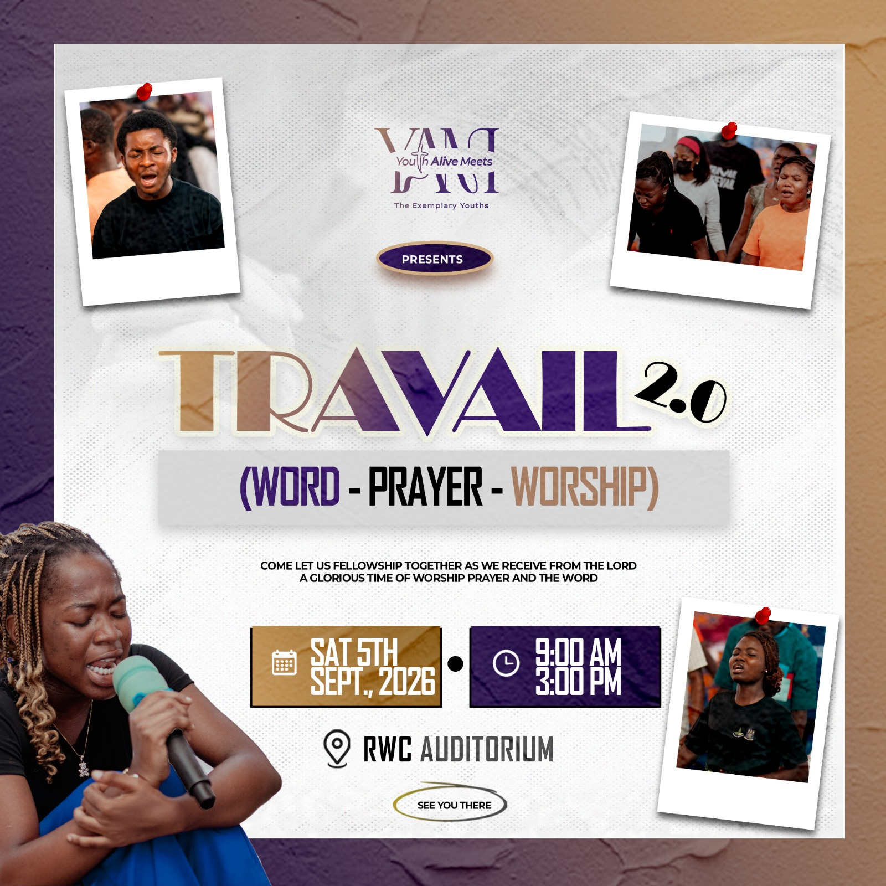

Happening now
Before the program
Travail begins soon
Saturday · 9:00 AM
Return here during the event for the current session and time remaining.
 Travail 2.0
Official program
Travail 2.0
Official program
Youth Alive Meets Presents
Word Prayer Worship
A glorious time of worship, prayer and the Word.
At a glance
Before the program
Saturday · 9:00 AM
Return here during the event for the current session and time remaining.
01
9:00 AM – 9:15 AM
Saturday · 5 September
Tap any session for its details. The active session updates automatically during the event.
Serving the moment
Word, prayer and worship are carried through every part of the day. Named ministers and facilitators can be added when confirmed.
“As soon as Zion travailed, she brought forth her children.”
Keep this close
